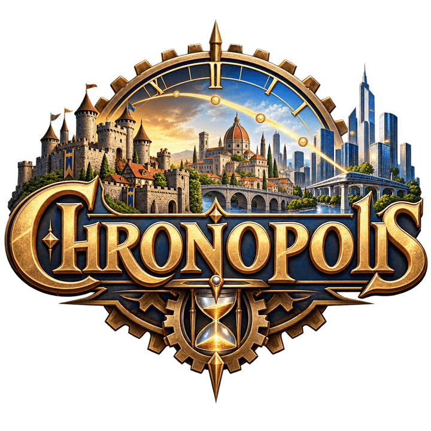

A 2D isometric city-builder made in Unity and playable right in your browser.
Place roads, zone districts, and watch your city grow. Built as an experiment in grid-based simulation, isometric rendering and WebGL deployment, with assistance from Claude Code.
This is an early prototype — expect rough edges and frequent changes. You can play the latest build below, download it directly, browse the source, or follow along on Itch.io.
Runs entirely in the browser via WebGL — no download required. Replace the logo at
assets/logo.png and update the Itch.io link in this file when it goes live.